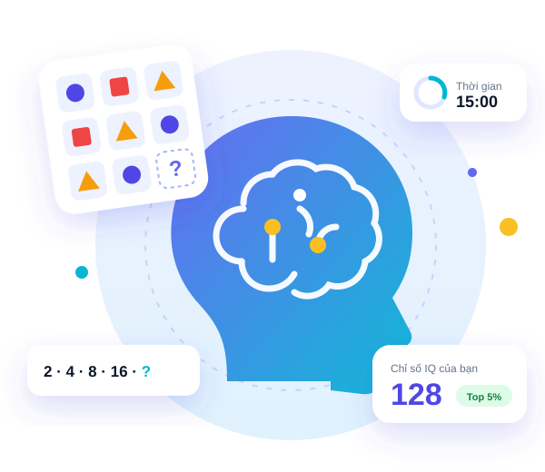
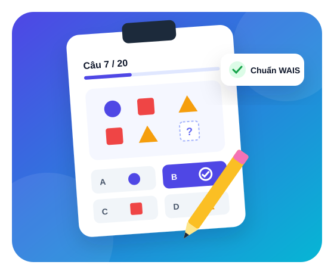
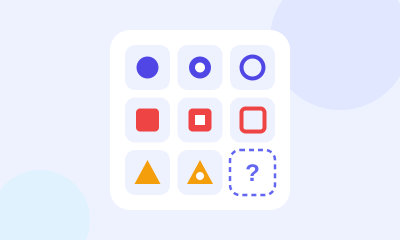
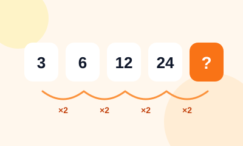
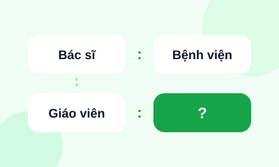
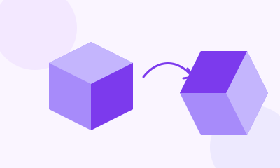
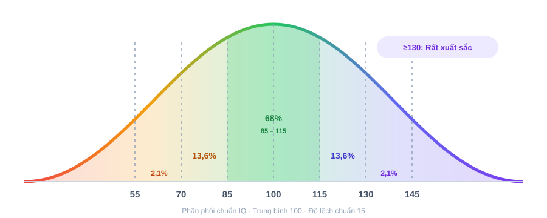

Test IQ miễn phí
20 câu hỏi mô phỏng các dạng bài Raven's Matrices và WAIS, đánh giá 4 năng lực cốt lõi: tư duy logic, số học, ngôn ngữ và không gian. Kết quả quy đổi theo thang điểm quốc tế.
Test IQ nhanh

Trắc nghiệm IQ là gì?
IQ (Intelligence Quotient) là thước đo năng lực nhận thức tổng quát, được chuẩn hoá lần đầu bởi Alfred Binet và phát triển qua các công cụ hiện đại như Raven's Progressive Matrices và WAIS.
Bài test dùng 4 dạng câu hỏi phổ biến nhất: ma trận hình ảnh, dãy số, loại suy ngôn ngữ và xoay hình không gian — ước lượng năng lực tư duy của bạn trong 15 phút.
- Thang điểm quốc tế: trung bình 100, độ lệch chuẩn 15
- Có giới hạn thời gian để phản ánh tốc độ xử lý thông tin
- Giải thích đáp án đúng cho từng câu sau khi hoàn thành
Bài test IQ đo lường điều gì?
Mỗi câu hỏi thuộc một trong 4 nhóm năng lực nhận thức dưới đây.

Tư duy logic
Tìm quy luật ẩn trong ma trận hình và chọn mảnh còn thiếu.
Ma trận RavenSuy luận
Số học
Hoàn thành dãy số và nhận ra quan hệ giữa các con số.
Dãy sốTính nhẩm
Ngôn ngữ
Loại suy từ vựng, tìm từ khác loại, hiểu quan hệ khái niệm.
Loại suyPhân loại
Không gian
Xoay, gấp và lắp ghép hình khối trong đầu.
Xoay hình 3DGấp hìnhLàm Test IQ chỉ với 3 bước
Không cần đăng ký, làm được ngay trên điện thoại hoặc máy tính.
Bấm “Test IQ nhanh”
Chuẩn bị giấy nháp, chọn nơi yên tĩnh rồi bắt đầu bài thi.
Trả lời 20 câu trong 15 phút
Đồng hồ đếm ngược; câu khó có thể bỏ qua và quay lại sau.
Nhận điểm IQ & giải thích
Xem điểm, xếp loại, vị trí so với dân số và lời giải từng câu.
Thang đo xếp loại bài test IQ
Điểm IQ được quy đổi theo phân phối chuẩn (đường cong hình chuông): trung bình 100, độ lệch chuẩn 15. Khoảng 68% dân số có IQ từ 85 đến 115.

| Điểm IQ | Xếp loại | Tỷ lệ dân số | Ý nghĩa |
|---|---|---|---|
| 130 trở lên | Rất xuất sắc | ≈ 2,2% | Ngưỡng xét vào hội Mensa |
| 120 – 129 | Xuất sắc | ≈ 6,7% | Tư duy trừu tượng rất tốt |
| 110 – 119 | Trên trung bình | ≈ 16,1% | Học và xử lý vấn đề nhanh |
| 90 – 109 | Trung bình | ≈ 50% | Mức phổ biến nhất |
| 80 – 89 | Dưới trung bình | ≈ 16,1% | Cần thêm thời gian luyện tập |
| 70 – 79 | Mức ranh giới | ≈ 6,7% | Nên tham khảo chuyên gia |
| Dưới 70 | Thấp | ≈ 2,2% | Cần đánh giá lâm sàng |
Lưu ý: Kết quả online mang tính tham khảo, không thay thế đánh giá lâm sàng bằng bộ công cụ chuẩn (WAIS, Stanford–Binet).
Tại sao nên chọn tracnghiemplus.com để làm bài Test IQ
Không chỉ cho bạn một con số — bạn biết rõ điểm mạnh, điểm yếu trong tư duy và cách cải thiện.
Miễn phí, không đăng ký
Làm ngay, xem kết quả không mất phí.
Chuẩn quốc tế
Mô phỏng Raven's Matrices & WAIS.
Phân tích 4 năng lực
Biểu đồ điểm từng nhóm kỹ năng.
Thuần Việt, dễ hiểu
Câu hỏi và lời giải bằng tiếng Việt.
Bảo mật thông tin
Không thu thập dữ liệu nhạy cảm.
Mượt trên điện thoại
Giao diện tối ưu cho mọi màn hình.
Sẵn sàng đo chỉ số IQ của bạn?
20 câu hỏi · 15 phút · Có kết quả và lời giải ngay sau khi nộp bài.
Test IQ nhanhGiải đáp về bài Test IQ
Bài test IQ này có chính xác không?
Bài test xây dựng theo cấu trúc các bộ đo IQ chuẩn và quy đổi điểm theo phân phối chuẩn nên kết quả ước lượng khá sát. Đây là công cụ tham khảo, không thay thế đánh giá lâm sàng.
Làm bài Test IQ mất bao lâu?
20 câu hỏi trong 15 phút.
Điểm IQ bao nhiêu là cao?
Từ 110 là trên trung bình, từ 120 là xuất sắc, từ 130 thuộc nhóm khoảng 2% dân số.
Có thể làm lại bài test nhiều lần không?
Có, nhưng kết quả lần đầu thường phản ánh chính xác nhất.
Chỉ số IQ có cải thiện được không?
Luyện tư duy logic, đọc sách, ngủ đủ và vận động đều đặn giúp bạn phát huy tốt hơn năng lực nhận thức.